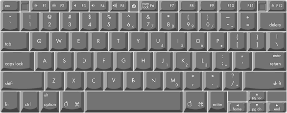
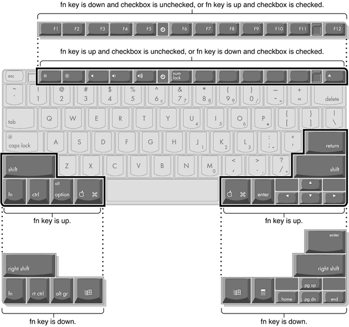
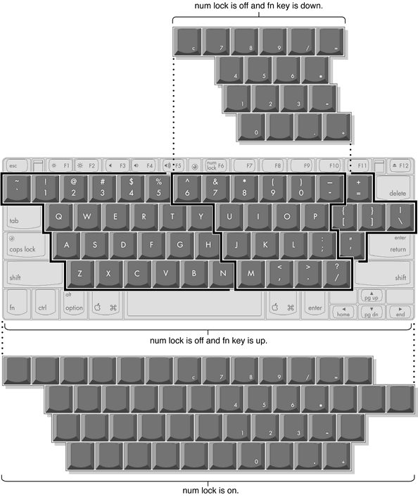

| PATH |

The keyboard is a compact, low-profile design with a row of function keys and inverted-T cursor motion keys.
The keyboard is removable to allow access to the internal components and expansion connectors inside the computer. The keyboard is held in place by a locking screw and two latches.
To unlock the keyboard, the user turns a slotted screw that is part of the Num Lock LED, which is between the F5 and F6 function keys. Turning the screw 180 locks or unlocks the keyboard.
| Note: The PowerBook G4 computer leaves the factory with keyboard locking screw in the unlocked position. |
The two latches are between the ESC key and the F1 key and between the F11 and F12 keys. The user can release the latches by pulling them toward the front of the computer.
Several of the keys on the keyboard have more than one mode of operation.
The next sections describe these groups of keys and the way their alternate modes of operation are selected by using the Fn key, the Num Lock key, and the Function Keys checkbox in the Keyboard control panel.
Figure 3-5 shows the actual appearance of the keyboard. Figure 3-6 shows the alternate modes of operation of the function and control keys. Figure 3-7 shows the embedded numeric keypad.
Figure 3-5 Keyboard layout
Figure 3-6 and Figure 3-7 include duplicate versions of some keys in order to show their alternate modes of operation. In some cases, the alternate key captions shown in the figures do not appear on the keyboard. For the actual appearance of the keyboard, refer to Figure 3-5.
Figure 3-6 Alternate operations of function and control keys
Figure 3-7 Embedded numeric keypad operation
Pressing the Fn key affects three sets of keys: the function keys F1–F12, the embedded numeric keypad, and certain modifier keys.
Pressing the Num Lock key affects two sets of keys: the embedded keypad and the rest of the alphanumeric keys.
The Fn key lets the user switch the mode of operation of the function keys at any time. The user selects the default mode of the function keys by means of the Function-keys checkbox in the Keyboard Control Panel.
The Function-keys checkbox lets the user choose whether the function key operations are primary or secondary. "Function keys primary" means the function keys are normally in their F1–F12 mode of operation and pressing the Fn key selects their control-button mode. "Function keys secondary" means the function keys are normally in their control-button mode and pressing the Fn key selects their function-key mode.
In other words, pressing the Fn key reverses the mode of operation of the function keys from the default mode set by the checkbox. Table 3-7 summarizes the checkbox settings and the operation of the Fn key. The operations of the individual function keys are shown in Table 3-7 and Figure 3-6.
Function keys F1–F6 are used as control buttons for the display and sound and F12 is used for media eject; function keys F7 through F11 are open for the user to define. The operations of the function keys are controlled by the Function keys checkbox and the Fn key. Table 3-8 is a list of the function keys and their operations as control buttons. The Keyboard Control Panel allows the user to assign operations to function keys F7 through F11. Operations that can be assigned include
A certain group of alphanumeric keys can also function as an embedded keypad. The user selects this mode by using the Fn key or the Num Lock key. Figure 3-7 shows the keys making up the embedded keypad and Table 3-9 lists them.
| Key name | Keypad function |
| 6 | Clear |
| 7 | 7 |
| 8 | 8 |
| 9 | 9 |
| 0 | / (divide) |
| - | = (equals) |
| U | 4 |
| I | 5 |
| O | 6 |
| P | * (multiply) |
| J | 1 |
| K | 2 |
| L | 3 |
| ; | – (subtract) |
| M | 0 |
| , | NOP |
| . | . (decimal) |
| / | + (add) |
When the embedded keypad is made active by the Num Lock key, the other alphanumeric keys have no operation (NOP), as shown in Figure 3-7. The affected keys include certain special character keys: plus and equal sign, right and left brackets, vertical bar and backslash, and straight apostrophe.
The cursor control keys can also be used as page control keys. Other control keys can take on the functions of certain keys on a PC keyboard, for use with PC emulation software. The Fn key controls the modes of operation of this group of keys. Table 3-10 is a list of these keys and their alternate functions. These control keys are also show in Figure 3-7.